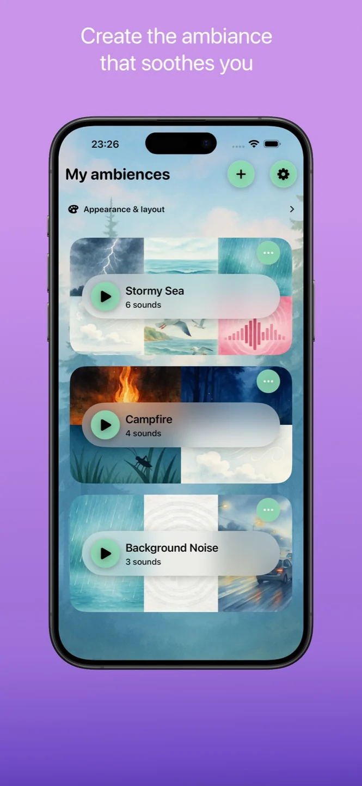
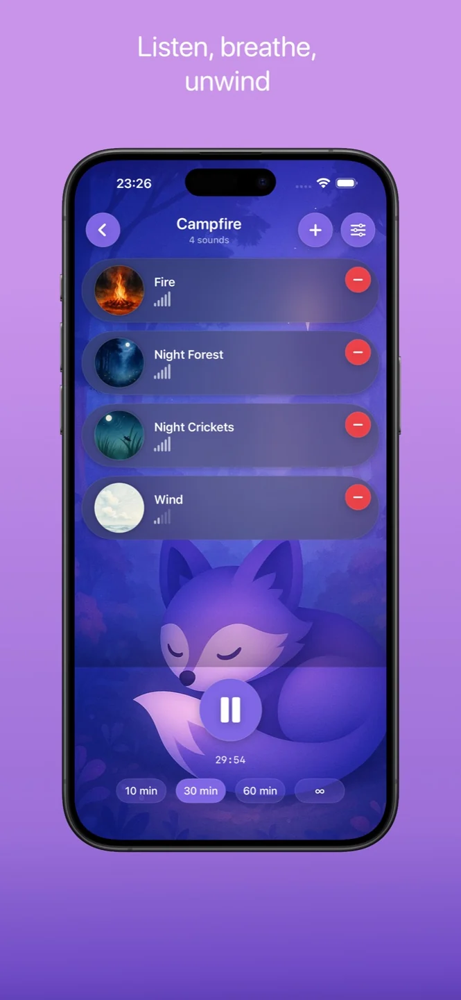
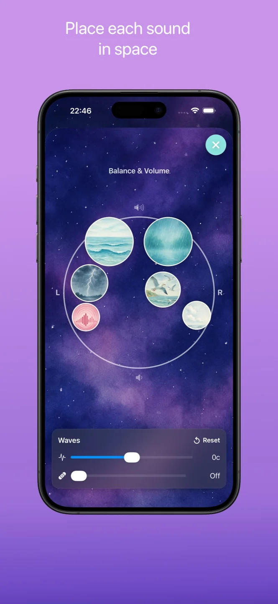
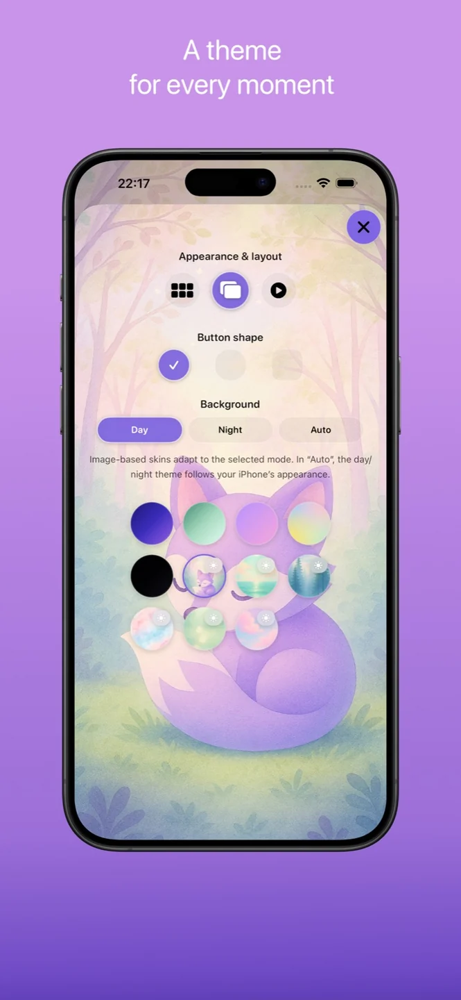

App Store
Todavía no se muestra una valoración pública.
Ver la ficha y las reseñasSonidos y momentos tranquilos · iOS
Combina lluvia, olas, chimenea y ruido de fondo para crear tu propio ambiente sonoro.
Descubre los detalles ↓
Ajusta cada sonido, configura un temporizador y escucha sin conexión y sin anuncios. Somnifox es una aplicación de sonidos para iPhone y iPad, con funciones gratuitas y acceso Premium opcional.




Todavía no se muestra una valoración pública.
Ver la ficha y las reseñasLas valoraciones se muestran por separado para cada tienda y pueden variar según el país y con el tiempo.
Consulta la ficha oficial para conocer disponibilidad, precios e idiomas del juego.